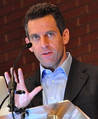

“Es necesario para la felicidad del hombre mantenerse mentalmente fiel a sí mismo.”
—Thomas Paine
Algunos meses permitían pedir más deseos que otros. Deseos de los buenos, los cósmicos, nada de pasteles de cumpleaños ni huesos de pollo.
Recordó el momento preciso en que se había percatado del hecho. Tenía unos siete años y se encontraba tirada de espaldas sobre la grama en casa de Rai, cuando una estrella fugaz cruzó el camino de su visión. No dijo nada. Minutos después vería más y recordaría que cada vez que Rai cumplía años, ella solía ver estrellas fugaces por el cielo. Eso mismo le ocurría con el cumpleaños de Amanda. Luego de un exhaustivo análisis concluyó que había meses que permitían pedir más deseos que otros; aunque no tenía idea sobre la capacidad de los meses para cumplirlos.
Tenía un cerebro creativo y curioso, que le gustaba hacer preguntas. Especialmente respecto a la creación de todo. La primera respuesta que escuchó respecto al sugestivo asunto comenzaba y terminaba con Dios; no dejaba mucho a la imaginación. Él lo había hecho y la gente parecía segura del dato. Cuando eres pequeño, la explicación resulta simple y terminada: un ser superior en el cielo se había encargado de todo el asunto. Listo, ¡a jugar!
Por supuesto, hizo más preguntas. Las respuestas, sin embargo, no saltaban ni bailaban de alegría, no se burlaban de sus neuronas ni la hacían vibrar con sus enigmas. Todas eran extraídas de una cárcel sagrada y compartían interesantes características con los suspirados deseos que los meses le permitían pedir sin cumplir. Recordaba el relato de las monjitas en el colegio, a los nueve años lo podía sintetizar de la siguiente forma:
“La culpa de todo la tiene una pareja de fisgones caucásicos y su extraña relación de fábula con una serpiente. Ciertamente, numerosas historias extrañas se desencadenan de su aparición. Te dicen primero que, de acuerdo con la Biblia, la mujer surgió de la costilla del hombre pero más tarde expondrán cosas peores. Mientras tanto, las historias siguen un destello mágico apabullante; el ser creador decide comportarse de formas violentas y discordantes; tortura y asesina a los que no estén de acuerdo con sus designios y origina las más ridículas escenas sólo para comprobar que es adorado. Finalmente, envía a su hijo a nacer a través del adulterio con el fin de ver cómo lo torturan y muere en las más horrendas condiciones”.
Creer la historia puede significar miedo; especialmente en un niño. A tu alrededor afirman que has sido creado por un psicópata bipolar extremadamente inestable que te observa y te juzga todo el tiempo. El biólogo y autor Richard Dawkins lo llama adoctrinar a los niños y lo considera un abuso infantil.
“Las religiones siempre van a indoctrinar niños. Enseñar religión a un adulto es un trabajo duro porque las religiones son tan transparentemente absurdas. Por el contrario, la enseñanza de la religión a los niños es fácil. Los niños son susceptibles y sugestionables. Para un niño no suena como un sin sentido exagerado, los niños son crédulos”, escribió. “Nadie deliberadamente enseña a sus hijos un manojo de mentiras a sabiendas de que son mentiras. La razón para infundir el miedo en un niño cuando son demasiado jóvenes para darse cuenta de que la historia es una farsa, es que la persona que realiza la enseñanza considera que la historia no es una farsa, los motivos siempre son puros pero no importa, el efecto es el mismo”.
Y las jóvenes neuronas curioseaban. Era un mono avanzado con un cerebro fisgón y una disposición completamente abierta a las explicaciones, respuestas y soluciones; se iba dando cuenta de que las historias no tenían sentido. No sólo eso, existía un mundo de personas fuera de aquel campo que no las creía; ¿por qué?, pues por algo realmente simple: explicaciones razonables con evidencias.
—No necesitas historias científicas sobre el origen del planeta y los animales en él para discernir que todo eso que te cuentan las monjas es falso, ni ellas mismas se lo creen, decía Rai a veces, quien poseía un cerebro ecuánime.
Por supuesto, los religiosos también iban cambiando sus respuestas; cuando las preguntas comienzan a ser complejas, las historias, entonces, se convierten en metáforas. En palabras más eficaces: hay que creer que los seres más poderosos del Cosmos son incapaces de comunicar y beneficiar a sus creaciones con su conocimiento único y sobrenatural; muy por el contrario, sus deseos hay que adivinarlos o acomodarlos, extraerlos entre las metáforas, las parábolas y los retazos de historias tergiversadas que cuenta el libro. Al final, no contamos con planteamientos objetivos ni evidencias.

Creas o no, el mundo no cesa. La miseria te rodea. Trabajadores de los dioses se hospedan en los mejores hoteles y viven en lujosas condiciones mientras que todos sus fieles no pasan por la misma suerte. No hay explicación divina alguna respecto a la situación del mundo más que dos redes tradicionales, inventadas para excusar la ‘apatía de los dioses’ en el reino cristiano: el libre albedrío y Satanás.
Cuando Rai cumplió 27 años acordaron celebrarlo de nuevo en el campo, como cuando eran niños. Además, aprovecharían para ver las Perseidas que eran anunciadas para ese fin de semana. ¿Era menos mágico ahora?, ¿necesitaba pedir deseos?
—Es la fe, amiga. Es un aspecto importante en el humano; se desprende de la confianza y se adhiere al deseo de no morir ni dejar los suyos. Es el ADN hablando de supervivencia y reproducción otra vez, son sus especialidades. Así tu genoma nunca muere y nunca tendrás que pensar en dejar de ver a tus otros genes. Es la versión moral y religiosa, ya sabes: ni la muerte los separará.
Apreciaba el valor de crecer con un amigo que percibía el mundo por encima de lo enseñado. Un elemento distinto en su vida al debate continuo que era su familia, principalmente su hermano, un padre de la iglesia católica que, aunque no rebosara en fe, poseía la energía para favorecer a los demás. Un hombre compasivo que creía en el poder humano y utilizaba cualquier medio para ayudar. Su medio era católico, sus respuestas no eran lógicas pero sus acciones eran completamente bienhechoras, ¿qué importaba si una persona así no creía en pseudogenes?, ¿por qué veía necesario discutir con él y debatir esas respuestas extraídas del diseño inteligente estadounidense?, ¿era inapelable argumentar sobre la vitamina C?
En su interior, deseaba que entendiera las evidencias y las aceptara, estuviesen o no de acuerdo con sus creencias. Lo veía distorsionar, desvirtuar e ignorar los resultados científicos que no le convenían y eso no le parecía prudente; de hecho, enseñanzas así sólo provocan confusión y conflictos.

“Una gran cantidad de organismos, incluyéndonos, tienen genes en su ADN llamados pseudogenes, que son genes que no están activos; podemos decir que no están activos debido a que la secuencia de codificación del gen fue interrumpida por algo que impide que éste forme su producto, una proteína, o a lo mejor observamos que hay un error en el interruptor que lo enciende y lo apaga. Hemos encontrado en la secuenciación de ADN humano y de otras especies, que prácticamente todo organismo está repleto de pseudogenes. El más famoso en nuestra especie es el gen para la fabricación de vitamina C. Los humanos tenemos el camino completo para producir la vitamina, sin embargo, el último paso se rompe, es decir, los genes implicados en la última etapa del proceso están muertos porque hay una parte en la secuencia del ADN que en realidad ha sido eliminada o cortada. Sin embargo, el gen está activo en muchos de nuestros parientes que lo utilizan para producir vitamina C. Podemos suponer que los seres humanos no necesitan hacer esta vitamina porque tenemos un montón de ella en nuestra alimentación, por lo tanto, era una vía superflua que fue inactivada por alguna mutación aleatoria. Es sólo un ejemplo de estos pseudogenes. Veamos unos en el ornitorrinco, por ejemplo, un animal que no tiene estómago pero tiene genes para producir enzimas del estómago. Podemos concluir que sus antepasados tenían estómago, algo que también podemos comprobar a través de evidencia molecular y fósil; pero el ornitorrinco ya no tiene estómago, sin embargo, mantuvo la información genética aunque ya inactivada. Así que no hay otra manera de explicarlo, a menos que nos digan que el creador era una especie de bromista que ponía genes inactivos para indicar la evolución de las criaturas, a excepción de decir que las criaturas tienen genes que descienden de antepasados comunes”, explica el biólogo de la evolución, profesor y autor de la Universidad de Chicago, Jerry A. Coyne.
¿Es éticamente saludable defender la religión desvirtuando la ciencia? Como expresó una vez Rai, no hay que conocer teorías científicas para discernir que nada de eso es verdad, entonces, ¿por qué tantas personas continúan inventando, escondiendo, negando o cambiando resultados para que confirmen sus creencias?, ¿por qué no aceptar, como muchos, que el camino espiritual es independiente de la realidad conocida y tratarlo como tal?

“En Breaking the Spell explico que la creencia en la creencia es un fenómeno común que no se limita a las religiones. Los economistas se dan cuenta de que una moneda sana depende de que la gente crea que la moneda es sólida y los científicos reconocen que la objetividad real de los estudios científicos sobre el calentamiento global es políticamente impotente a menos que la gente crea en esa objetividad, por lo que los economistas y los científicos (entre otros) toman medidas para promover y proteger tales creencias que para ellos son benignas. Están así actuando sobre la ‘creencia en la creencia’”, explica el filósofo y científico cognoscitivo, Daniel Dennett.
Para Dennett, sólo el 10% de los religiosos que dicen creer, realmente creen.
“A veces, el mantenimiento de una creencia es considerado tan importante que sistemas impresionantes de propaganda son levantados y vigorosamente defendidos por personas que no comparten la creencia pero piensan que es importante que la sociedad la sostenga. Por ejemplo, monarcas imbéciles han sido mantenidos en sus tronos por engañosas conspiraciones que han considerado socialmente disruptivo confirmarle al pueblo lo que todo el mundo sospecha: el rey es un idiota. La religión ofrece un caso extremo. No siempre es fácil decir que sólo se cree en la fe, ya que las acciones motivadas por creer en la creencia (aunque en realidad no crean en Dios) son, con la excepción de las raras confesiones sotto voce, poco menos que indistinguibles de las acciones de los creyentes genuinos: decir las oraciones, cantar los himnos, entregar el diezmo, proclamar la lealtad, participar en voluntariados para proyectos de la iglesia y así sucesivamente. A veces me pregunto si incluso el 10% de las personas que proclama su fe en Dios realmente cree en Dios”, proclama Dennett.
Su hermano le temía a la fe. Era un indiferente creyente en la no creencia, desesperado por encontrar evidencias que le otorgaran cierta paz. La fe no lo convencía de la existencia de la magia porque no la poseía; era como estar enamorado del amor. Por eso, cuando se atravesó con los cristianos del diseño inteligente su mundo tomó otro rumbo, era sumamente importante para él demostrar que no estaba equivocado; la ciencia lo estaba, ornitorrinco o no, cuando no demostraba sus creencias.
Muchas veces se despidió de él con la promesa de que no debatiría el tema nuevamente, que lo dejaría en paz. Sin embargo, olvidarlo era condonar su enseñanza, acallar la curiosidad con falsedades y escapatorias. Lo veía como una gigantesca confabulación para indultar otro enorme e incoherente disparate.
“Estoy seguro de que aquellos que creen en la creencia se equivocan. Es decir, no es más necesario preservar el mito de Dios con el fin de preservar una sociedad justa y estable que la necesidad de aferrarnos al antiguo dinero patrón oro para mantener nuestra moneda sólida. Fue una muleta útil, pero ya lo hemos superado. Dinamarca, de acuerdo con un estudio reciente, es una nación más sana, más saludable, más feliz, y la más libre de crimen en el mundo, y en general los daneses simplemente ignoran el problema de Dios. Un estudio nacional realizado por los evangélicos en Estados Unidos predice que sólo el 4% de sus hijos llegará a ser creyentes de la Biblia cuando sean adultos. Los bautistas del sur están bautizando tanto hoy como lo hicieron en 1950, cuando la población era la mitad de lo que es hoy. ¿Cuándo deben aquellos que sólo creen en la creencia tirar la toalla y dejar de intentar que sus hijos y vecinos se aferren a algo que ellos ya no necesitan? ¿Qué tal ahora?”, escribió el filósofo.
Su mejor amiga tiene una niña de siete años que ha estado yendo de campamento con su familia cada agosto para ver las Perseidas. Su papá es astrónomo, su mamá pediatra; para ella, pedir deseos a una roca espacial tiene el mismo sentido que la existencia de las haditas en la habitación de su infancia. Sin olvidar que una vez, alguna niña también creyó en ellas.
—¡Avanzamos!, pensó.
No existen las responsabilidades morales
¿Eres realmente autónomo?
Comencé esta columna con una idea distinta. Pero la borré y decidí escribir una historia basada en una anécdota que escuché el fin de semana de las Perseidas. Durante el tiempo en que la escribía, estaba segura de que había sido mi decisión cambiar de idea respecto al relato. Me he acostumbrado a vivir bajo el concepto primordial de que soy libre y puedo cambiar mi comportamiento cuando lo desee, actuar de otra forma, ejercer mi autonomía. A pesar de ello, la lectura de la biología, la genética y la neurología me ha ido demostrando poco a poco lo contrario; he conocido mecanismos biológicos encargados de provocar causas, también sobre experiencias que las promueven o las disminuyen significativamente.
El otro día, un artículo sobre la resiliencia en los humanos en la revista Órbitas Científicas citaba una investigación elaborada en Brasil: los investigadores encontraron una fuerte relación entre la exposición al riesgo y la inadaptación, pero también descubrieron que las condiciones de protección mitigan los efectos negativos de esta relación. La promoción de elementos sociales positivos puede aumentar la resistencia, incluso en una población muy desfavorecida, dijo Silvia Koller de Rio Grande do Sul, de la Universidad Federal de Brasil.
“Nuestros resultados indican que los factores de riesgo se asociaron positivamente con la inadaptación, pero los factores protectores psicosociales disminuyeron esa asociación”, dijo. “Nos regala esperanzas de que podemos trabajar en los factores de protección para mejorar la vida de los jóvenes”.
Puedes tener una fuerte inclinación genética hacia algo, sin embargo, la experiencia tiene el poder para manipular hasta qué punto esa inclinación se mueva; precisamente, estos dos elementos parecen regir nuestras vidas con fidelidad. Sin embargo, prescindir de nuestra libertad completa nos presenta ramificaciones con las que tendríamos que lidiar, tanto legales como financieras, familiares e individuales, todo parece estar ligado al libre albedrío. Nos parece imposible vivir sin él, además, se trata de la excusa primordial usada por muchos religiosos para explicar la inactividad divina. El destino, el diablo y el libre albedrío son tres actores protagonistas del drama que conforman esas creencias.
Daniel Dennett, Steven Pinker, Sam Harris, Richard Dawkins, Cordelia Fine, Oliver Sacks, Michael Gazzaniga y Daniel Kahneman, son sólo algunos de los autores que nos han regalado inusitados viajes en este mundo sin libre albedrío. Sus estudios e ideas proponen que las decisiones que tomamos, la forma en que actuamos y pensamos, son procesos bioquímicos en el cerebro guiados por las experiencias del animal en el medio. Una vez los unimos, es probable brindar una idea fiel respecto a la persona y sus decisiones.

“El libre albedrío es una ilusión”, escribe el neurocientífico y autor Sam Harris. “Muchas personas se preocupan de que el libre albedrío es una ilusión necesaria. Sin duda, es concebible que el conocimiento de ciertas verdades sobre la mente humana pueda tener lamentables consecuencias psicológicas y/o culturales. Pero no tiene que ser así. Todavía podemos condenar ‘la intención consciente de hacer daño’”.
De acuerdo con el autor, la niña en nuestra historia anterior no hubiese podido actuar ni ser de otro modo. Si regresara al momento pasado, cuando pensaba que los meses eran responsables de otorgar pedidos de deseos y hacía preguntas, con los mismos genes, las mismas experiencias y el mismo medio, ella hubiese actuado igual. La autonomía que se le otorga al ser humano mediante el libre albedrío realmente no existe, como bien lo expresó el filósofo alemán Arthur Schopenhauer:
“El hombre puede hacer lo que quiere; pero no puede querer lo que quiere”.
Albert Einstein consideraba el pensamiento realmente “liberador”.
“Es una idea que hace que no me tome tan en serio”, escribió.
De hecho, la noción de eliminar el libre albedrío de nuestros sistemas no sólo llega a través del conocimiento de los procesos bioquímicos que reflejan parte de nuestro comportamiento sino del pensamiento mismo. Para Harris, saber que nuestra biología y experiencias tienen el control primordial de nuestra persona no necesariamente cambiará la forma en que percibimos el esfuerzo, tomamos las decisiones y otorgamos las culpas, entre otros, es como pensar que saber que estamos todos hechos de átomos modifica la forma en que nos diferenciamos de la mesa, por ejemplo. Para el neurocientífico, la clave es que sentimos que tomamos decisiones, percibimos esa libertad y lo continuaremos haciendo aún sepamos que, al principio de todo, somos parte del cerebro y es ese sistema global, formado por genes y experiencias, el que tiene siempre el control del animal.
“No estás controlando la tormenta ni andas perdido en ella. Tú eres la tormenta”, escribe Harris en su libro Libre albedrío (Free Will).
Ciertamente, investigaciones neurológicas ya han demostrado que es posible conocer ciertas decisiones que las personas van a tomar milisegundos antes de que sean tomadas (ver estudios del fisiólogo Benjamín Libet), de hecho, “apenas 256 neuronas son suficientes para predecir con precisión de un 80% lo que la persona decidirá mover”, escribe Harris. Lo que nos trae a la mente los precogs de Philip K. Dick, quienes podían predecir todo tipo de crímenes antes de que ocurrieran en El informe de la minoría.
Sin embargo, hay muchas cosas que las sociedades han decidido negar, muchas veces por la sanidad que vive en la ignorancia de otros. Dios es un caso ejemplar. Junto al libre albedrío, los humanos dividen el control de sus vidas entre sus divinidades, dios con su misteriosos designios, y el libre albedrío que responsabiliza a los humanos de sus decisiones. Erradicar ambos de nuestro léxico social, ¿dónde nos deja?, ¿es que no somos responsables de nuestras conductas?
Para algunos filósofos y científicos, la mejor solución es obviar el asunto; otros afirman que, al final, con o sin libre albedrío somos capaces de condenar la conducta criminal que ocasiona daños a los demás como una forma de protegernos de los criminales.
“¿Cuáles son, entonces, las consecuencias de darse cuenta de que el determinismo físico anula nuestra capacidad de elegir libremente? Pues bien, el nihilismo no es una opción: los seres humanos estamos constituidos, a través de la evolución o de otras variables, para creer que podemos elegir. La que se vería seriamente afectada es nuestra idea de la responsabilidad moral, algo que tendría que ser desechado junto al libre albedrío. Si actuar bien o mal está predeterminado en vez de ser una decisión real, entonces no hay responsabilidades morales, sólo acciones que lastiman o ayudan a los demás. Esa comprensión no debería seriamente cambiar la forma de castigar o premiar a la gente, porque todavía tenemos que proteger a la sociedad de los delincuentes, y la observación de castigo o recompensa puede alterar el cerebro de los otros, actuando como elemento de disuasión o estímulo”, escribe Harris.
El libre albedrío es una idea que nace en la filosofía, una forma de compensar el determinismo que implican los designios de los dioses y el destino; así, el agente es al final un ente autónomo e independiente para elegir, para tomar decisiones propias. De hecho, la compatibilidad del determinismo y la libertad protagoniza mecanismos varios del quehacer humano, pero la neurología, entre otras ramas de la ciencia, ha conseguido explicar esa autonomía, arrebatándosela al agente y entregándola al cerebro. Podemos argumentar que nosotros somos nuestros cerebros, pero de la misma forma como no tenemos control sobre el latido de nuestro corazón, no tenemos control sobre las sustancias precisas que conforman y producen nuestros pensamientos y, al final, deciden. Ni siquiera es nuestra opción si aceptarlas o no.
Así como lo expuso Isaac Bashevis Singer: “debemos creer en el libre albedrío, no tenemos opción”.
No creer en él tampoco es nuestra decisión.
Pero sentimos que decidimos. Las intenciones, los esfuerzos, los premios y castigos que conforman nuestras sociedades están basados en esa libertad. La conducta humana navega sobre arbitrajes, dictámenes y sentencias, es así como forjamos nuestros caminos. Pensamos que existen muchas vías y que somos los agentes de la decisión final. Sin olvidar el azar y sus consecuencias, por supuesto.
Y a lo mejor lo somos. Quizá nuestra acción ofrezca la propuesta final pero otros mecanismos ejercen el control primario de todo el asunto. El libre albedrío no es necesario, nos dicen, pero así como no te das cuenta de que estás hecho de átomos o que miles de millones de neutrinos te atraviesan todo el tiempo, tampoco tienes que preocuparte por saber de dónde provienen tus decisiones. Eres parte de tu cerebro y el cerebro fue fabricado por genes, has caminado por un medio donde adquiriste específicas experiencias…ese es tu libre albedrío.
Volver al índice de la Lupa Herética
© 2008-2023 Glenys Álvarez y Sin Dioses. Prohibida la reproducción con fines comerciales.
Comentarios
Comments powered by Disqus